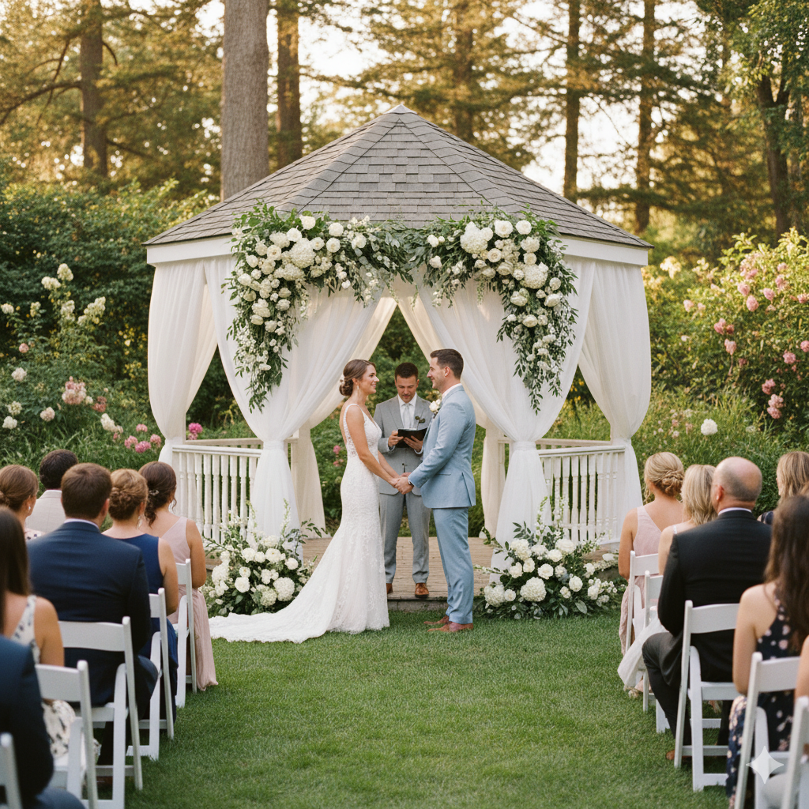
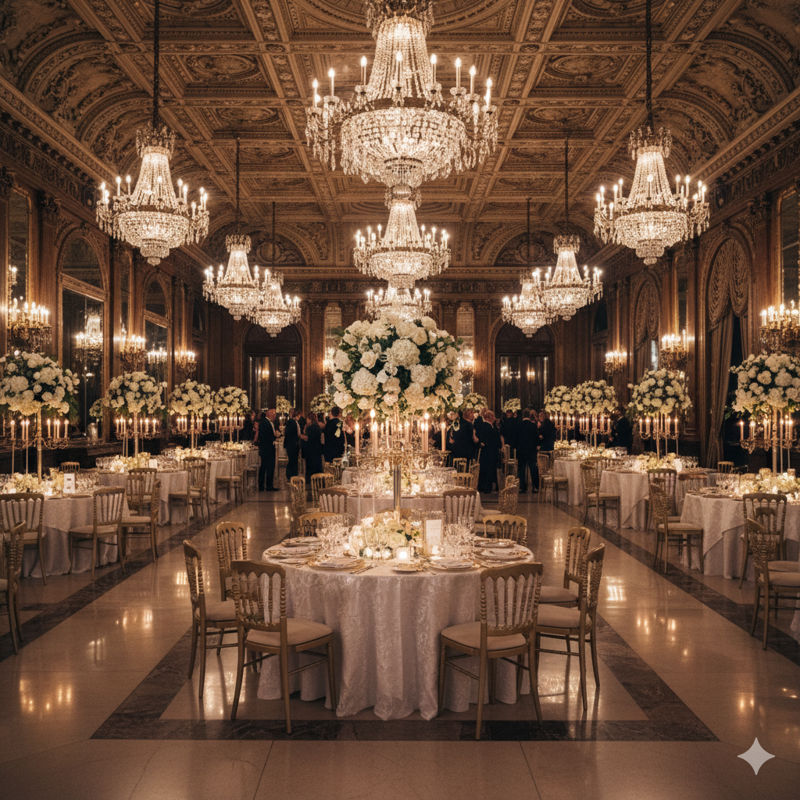

A escolha do local define o tom e o estilo do seu casamento. Seja um salão clássico, uma chácara rústica ou um jardim romântico, Piracicaba oferece opções encantadoras para todos os sonhos. Explore os melhores espaços da região.

Espaço Jardim Encantado
Um cenário idílico com jardins exuberantes, lago e um salão integrado à natureza, perfeito para casamentos ao ar livre.
Ver Perfil
Salão Imperial
Luxo e sofisticação num salão de arquitetura clássica, com pé-direito alto e lustres de cristal para eventos glamorosos.
Ver PerfilÉ proprietário de um espaço para eventos?
Destaque o seu local no nosso guia e seja encontrado por casais que procuram o cenário perfeito!
Cadastre-se Agora